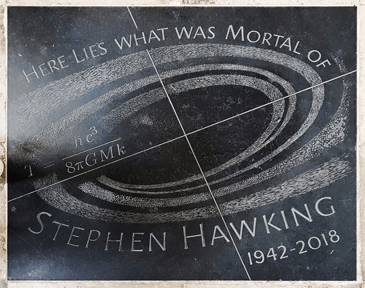

While Stephen Hawking’s ashes were being interred during a memorial service at Westminster Cathedral, the European Space Agency beamed into space an original piece of music by the Greek composer Vangelis that featured Hawking’s voice. The Cebreros Station outside of Madrid broadcast the transmission toward the black hole nearest to Earth.
The move was meant to honor Hawking’s primary contribution to astrophysics, his theory that thermal radiation is spontaneously emitted by black holes due to the steady conversion of quantum vacuum fluctuations into pairs of particles, one of which escapes while the other is trapped inside the black hole. Hawking radiation, and the related issue of whether information that falls into a black hole is lost or is somehow recoverable from the radiation, was a profound concept that still engenders controversy among theoretical physicists.
But upon Hawkin’s death in 2018, many notices in the press made as much of Hawking’s “voice”—he used a voice synthesizer to communicate for more than 30 years—as of Hawking radiation. Reuters reported that Hawking’s synthesized voice “was his tool and his trademark,” describing it as a “robotic drawl that somehow enhanced the profound impact of the cosmological secrets he revealed.”
Even an obituary for Hawking in Nature by longtime colleague Martin Rees referred to “the androidal accent that became his trademark” and also speculated that Hawking’s field of cosmology was part of what made his life story resonate with a worldwide public—that “the concept of an imprisoned mind roaming the cosmos grabbed people’s imagination.” Even if only figuratively, Hawking was one of the world’s most famous living cyborgs, moving and speaking by electromechanical means because his flesh-and-blood body could not.

MERE MORTAL: Hawking was arguably our most famous living cyborg, and his legacy lives on not only in his breakthrough scientific work but in his synthesized voice, which may have made audiences more receptive to the cosmological secrets he revealed. Credit: JRennocks / Wikimedia Commons.
Hawking, who had amyotrophic lateral sclerosis (ALS), lost his ability to speak after a trip to Switzerland in 1985 when pneumonia forced doctors to put him on a ventilator and, after being transferred back to the United Kingdom, performed a tracheotomy to help him breathe. After recovering from the near-fatal pneumonia, Hawking initially used a spelling card to communicate, indicating letters with a lift of his eyebrows, an interim solution with obvious constraints.
Hawking’s first voice synthesizer used an iteration of “Perfect Paul,” a synthesized voice created by MIT research scientist Dennis Klatt, and was run on an Apple II computer with modifications that made the system more mobile. It allowed Hawking to communicate at a rate of 15 spoken words per minute using a hand clicker to select words from a separate software program that displayed them on a screen. ALS is a degenerative nerve disease that affects muscle control, so Hawking’s need for an apparatus that allowed him to write was arguably much more critical than the voice synthesis component, but voice synthesis allowed Hawking an additional modality of communication.
Hawking’s public “voice” is certainly created differently than one from a human body’s vocal system, but even this voice generated from electricity, signal-processing algorithms, circuitry, software code, and the distant echo of the body of Dennis Klatt—Perfect Paul was synthesized from Klatt’s recordings of his own voice—became unique in its specific instantiation for Stephen Hawking, even in how it sounded. The synthesized voice became “his” through his body’s intimate interactions with and through it.
“The concept of an imprisoned mind roaming the cosmos grabbed people’s imagination.”
Although the voice itself, as an electronic technology, lacked most of the expressive capabilities of a body’s, Hawking was known to use its affordances and constraints as expressions of his personality. He gave his lectures by sending saved text to the speech synthesizer one sentence at a time, but he stated that he did “try out the lecture, and polish it, before I give it,” a statement that implies he was practicing for a performance that included revisions to the way that the lecture sounded to him as much as to its content.
Known for his playfulness, Hawking appeared as himself in or recorded dialogue for numerous television shows, including The Big Bang Theory and Star Trek: The Next Generation. He also recorded the dialogue for his own depiction in animated series The Simpsons for three separate episodes and was made into a Simpsons action figure. He told reporters in 2014, “My ideal role would be a baddie in a James Bond film. I think the wheelchair and the computer voice would fit the part.”
Hawking’s synthesized voice was his “trademark,” as obituaries described it, though not literally trademarked by Hawking (it was not his intellectual property). On a web page that Hawking maintained during his lifetime, he credited David Mason of Cambridge Adaptive Communications for putting together the original Speech Plus system for him.
As early as 1988, Speech Plus had offered Hawking a new synthesizer, a CallText 5010, with improved text-to-speech capabilities, but Hawking insisted that the company provide him with one that used the same voice as his previous unit. Of his version of Perfect Paul, Hawking stated, “I use a separate synthesizer, made by Speech Plus. It is the best I have heard, though it gives me an accent that has been described variously as Scandinavian, American, or Scottish.”
Hawking famously refused “upgrades” to his communication apparatus, having come to accept the specific configuration of hardware and software, and the sound that it produced, as his own. As the technology that he used to speak became more obsolete, it became easier for Hawking to control other people’s use of the synthesized voice that had become so intimately associated with him. For example, Hawking insisted on approving a cut of the biographical film The Theory of Everything in 2014 before he let producers use his own synthesizer to rerecord dialogue.
Eventually, the 1980s-era hardware of Hawking’s synthesizer was failing, and other factors, from Hawking’s continuing nerve degeneration to the incompatibility of his specialized software and input devices with the latest computer systems, made it imperative to upgrade. Several people—graduate students, programmers, and a research team from Intel—were involved in getting a new system working to Hawking’s satisfaction. The new emulator was finally presented for Hawking’s approval in January 2018, only two months before he died. He never used the new system in public due to his failing health.
Hawking’s attachment to Perfect Paul shows how intimate our subjective experience of our own voice is, as well as the relationship that it affords us with the social world. Hawking’s use of Perfect Paul conveyed his sense of humor, his intellect, and also his physical disabilities. The machine became an extension of Hawking’s body, but one as prone to aging and breakdown as our biological bodies are. Far from a transhumanist dream, Hawking’s example shows the experience of being human is a thoroughly embodied one. 
This article was excerpted with permission from MIT Press Reader.
Lead image: Jeffq / Wikimedia Commons